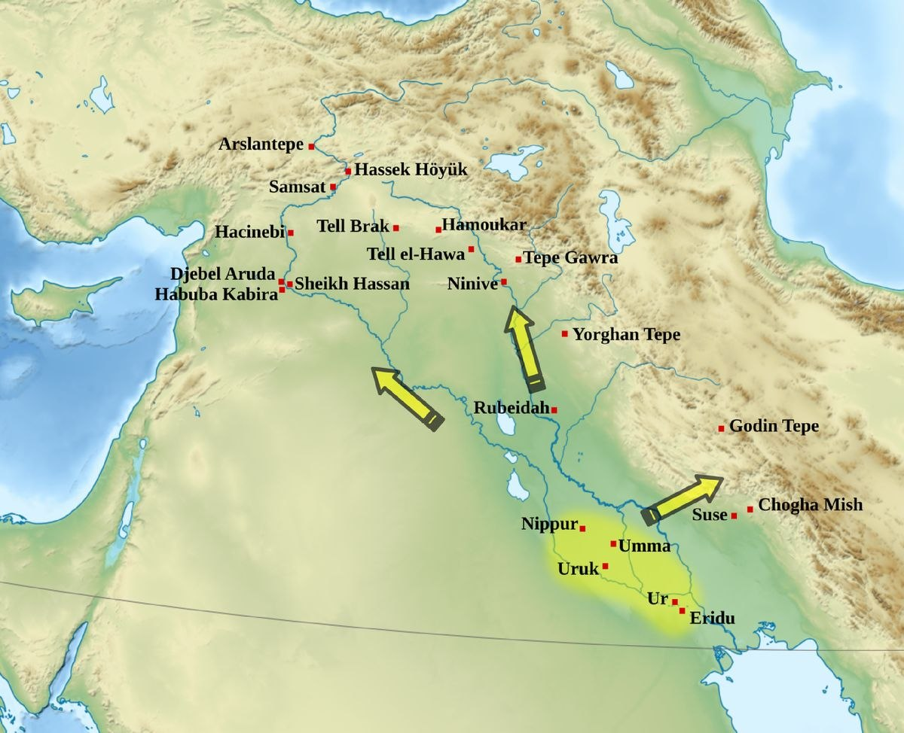
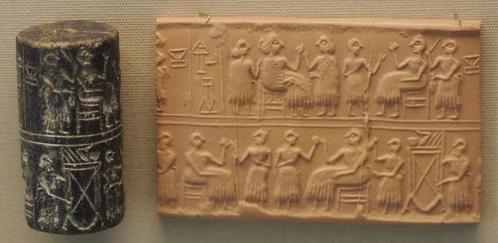
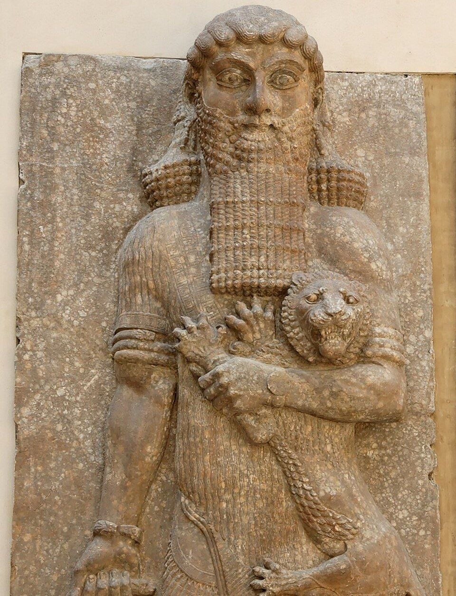
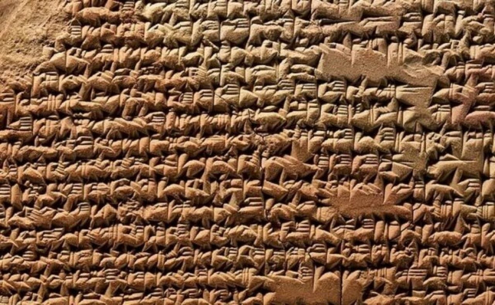
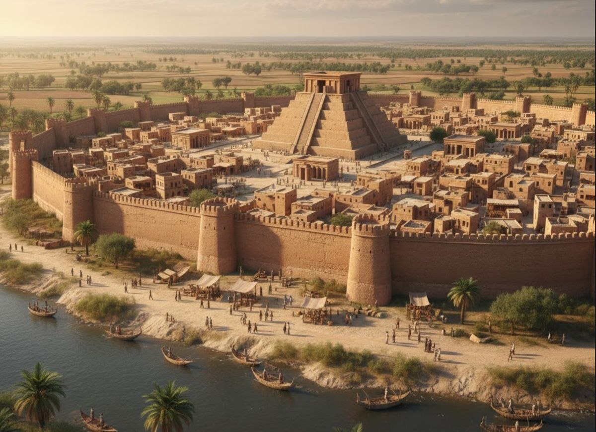
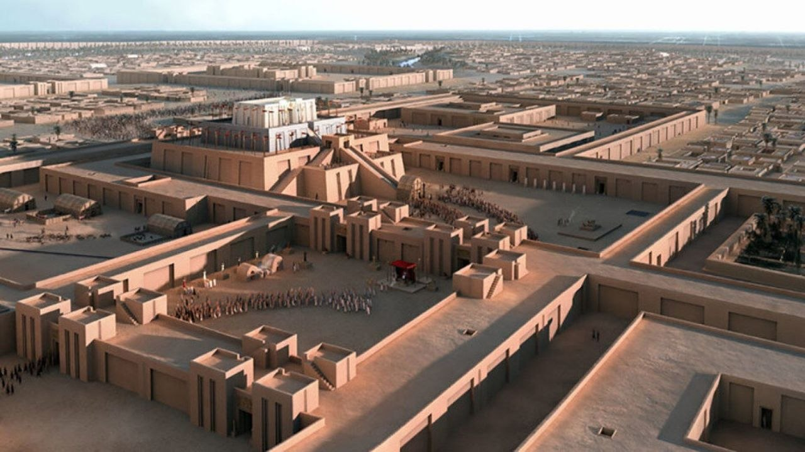
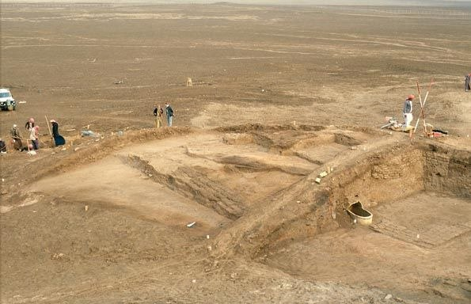
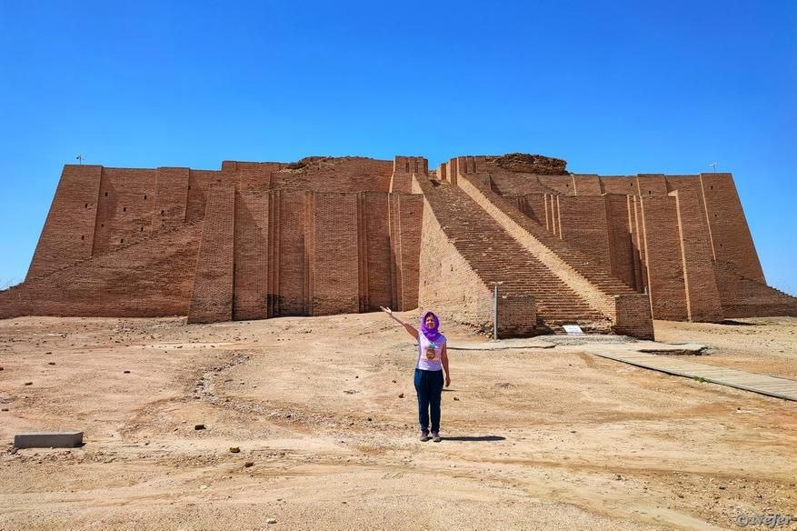
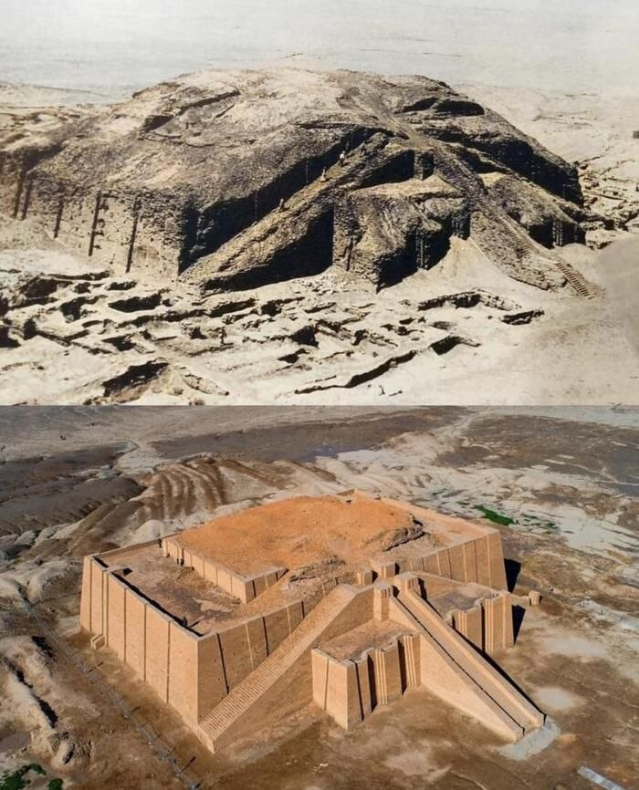

История основания: От скромных поселений до первого мегаполиса
Именно на этой древней земле человечество впервые перешло от разрозненных земледельческих поселений к сложной урбанизированной системе со своей монументальной архитектурой, бюрократией, письменностью и первыми в мире государствами. История Урука уходит своими корнями в глубокую древность и начинается задолго до появления письменности, примерно в V тысячелетии до нашей эры, в так называемый период Убейд.
Город возник не на пустом месте. Изначально на этой территории существовали два независимых, но близко расположенных культовых поселения — район Эана и район Куллаб. Со временем эти общины стремительно разрослись, слились друг с другом в единый ансамбль и были обнесены мощными глинобитными стенами.
В период так называемой «урукской экспансии» (IV тысячелетие до нашей эры) город пережил невероятный взрывной демографический и экономический рост. Урук превратился в настоящий центр притяжения для всего региона, поглотив множество мелких окрестных деревень и дав старт созданию первого в истории подлинного города-государства.
На пике своего могущества, около 2900–3000 годов до нашей эры, Урук представлял собой колоссальный для древнего мира мегаполис. Общая площадь обнесенной стеной территории составляла около 6 квадратных километров, а с учетом пригородов и внешних защитных зон его прямой контроль и влияние распространялись на еще более огромные территории.

По оценкам археологов и историков, в самом Уруке единовременно проживало от 40 до 50 тысяч человек, а в периоды максимального расцвета численность населения всего региона достигала 80 тысяч. Для древнего мира это была невиданная концентрация людей в одном месте.
Урук подарил человечеству само слово и концепцию города (на шумерском языке — «уру»). Именно здесь сформировалась уникальная городская культура, противопоставившая себя дикой природе и кочевому образу жизни, установив новые стандарты общежития, разделения труда и сложной социальной иерархии.
Как жили люди, вели дела и развивались в Уруке
Жизнь в Уруке была строго организована и подчинялась сложной системе централизованного распределения ресурсов. В самом центре городской жизни стоял огромный храмовый комплекс, посвященный богине любви и войны Иннане (Иштар) и богу неба Ану. Храмы выполняли роль не только религиозных центров, но и главных распределительных узлов экономики. Сюда стекался весь урожай, скот и ремесленные изделия, которые затем централизованно перераспределялись жрецами между всеми жителями города.
В Уруке впервые в истории появилось четкое социальное расслоение общества. На вершине пирамиды находились жрецы и военная верхушка, контролировавшие власть и ресурсы. Ниже стояли профессиональные писцы, торговцы, а также многочисленные ремесленники — гончары, кузнецы и ткачи. Основу же производительного труда составляли свободные общинники и зависимые работники.
Чтобы обеспечивать мегаполис всем необходимым, Урук вел масштабную торговлю по рекам и суше с соседними регионами — Ираном, Анатолией и Левантом. Из Урука вывозили зерно и ткани, а взамен импортировали металлы, качественный строительный лес и драгоценные камни, включая афганский лазурит.

Главные изобретения Урука
Урук стал настоящим технологическим и социальным инкубатором древности. За время своего существования город подарил человечеству целый ряд революционных изобретений, на которых построена современная цивилизация.
Первым и главным из них стала письменность (клинопись). Именно в Уруке, в археологическом слое Эана IV около 3300–3200 годов до нашей эры, была создана древнейшая система письменности в мире. Первоначально она существовала в виде пиктограмм на глиняных табличках, но быстро эволюционировала в знаменитую клинопись, позволившую фиксировать как хозяйственные отсчеты, так и древнейшие законы и сказания.
Не менее важным был прорыв в глиняном деле и гончарном производстве. Урукские мастера изобрели быстрый гончарный круг. Это позволило наладить массовое, конвейерное производство стандартной глиняной посуды — так называемых «белобортных мисок», которые штамповались тысячами штук для ежедневной выдачи пайков рабочим и строителям.
Параллельно развивалось масштабное кирпичное строительство. Шумеры первыми начали массово производить стандартизированный обожженный и сырцовый кирпич. Из него возводились общественные здания, огромные стены и террасы, украшенные сложными геометрическими узорами из разноцветных глиняных конусов (уникальная мозаика из глиняных гвоздей).
Для управления этими процессами возникла система бюрократии, печатей и учета. Для контроля за огромными потоками товаров и налогов в Уруке изобрели сложную административную систему. Появились цилиндрические печати, которые чиновники прокатывали по влажной глине, подтверждая подлинность документов, целостность сосудов и сохранность важных грузов.
Самая известная личность: Царь Гильгамеш

Самым знаменитым правителем Урука, чье имя навсегда вписано в мировую литературу, стал Гильгамеш — исторический царь, правивший городом приблизительно в 2700 году до нашей эры. Согласно шумерским царским спискам и эпосу, Гильгамеш был на две третьих богом и лишь на одну треть человеком. Его матерью была великая богиня-мать Нинсун, а отцом — смертный царь Лугальбанда.
Исторический Гильгамеш вошел в память народа как великий строитель. Именно при нем были возведены легендарные массивные стены Урука, длина которых составляла около 9 километров, а также грандиозные зиккураты и храмы.
В эпосе он предстает могучим, но изначально деспотичным правителем, который после череды испытаний, утраты названного брата Энкиду и поисков тайны вечной жизни осознал бренность бытия и величие человеческих дел, оставленных после себя.
Фразы и факты из «Эпоса о Гильгамеше»
«Эпос о Гильгамеше» — величайшее литературное произведение древности, созданное на основе урукских сказаний. Текст донес до нас яркие факты и поэтические строки об этом городе и его правителе.
Эпос начинается с призыва восхититься творением царя и мощью городских укреплений:
«Поднимись на стены Урука, пройдись по валу, осмотри фундамент, погляди на кирпичную кладку: не обожжен ли его кирпич и не заложили ли его основы семь мудрецов?»
Главный урок, который выносит Гильгамеш после всех своих странствий в поисках бессмертия и смерти названного брата Энкиду, заключается в том, что вечная жизнь дарована только богам, а истинное бессмертие смертного человека заключается в его труде, создании великих дел и памяти потомков:
«Гильгамеш, куда ты стремишься? Жизни, которую ищешь, ты не найдешь... Когда боги создавали человека, они определили ему смерть, а жизнь удержали в своих руках».
Кроме того, именно в шумерской и вавилонской версиях эпоса о Гильгамеше содержится древнейшее описание глобального потопа и праведника Утнапишти, построившего ковчег, задолго до библейских сказаний о Ное.


Сколько существовал Урук?
Урук обладал невероятно долгой историей. Город зарождался в IV тысячелении до нашей эры, процветал на протяжении шумерского и аккадского периодов, продолжал жить при вавилонянах, ассирийцах и персах, и окончательно был заброшен лишь в период исламского правления (около VII–VIII веков нашей эры).
Таким образом, непрерывная история Урука насчитывала почти 4–5 тысячелетий, что делает его одним из самых долгоживущих и устойчивых городов в истории человечества.
Даже когда реки изменили свой ход и пески пустыни скрыли монументальные здания, память об Уруке осталась жить в легендах, клинописных табличках и самом названии современного государства Ирак.

Современные раскопки и возрождение
История возвращения Урука из небытия началась в середине XIX века, когда британский геолог и исследователь Уильям Кеннет Лофтус в 1849 году провел первые масштабные разведки на месте руин Варки. Однако систематическое и научное изучение городища стартовало лишь в 1912 году под руководством Немецкого восточного общества (DOG). Немецкие археологи во главе с Юлиусом Йорданом применили новые для того времени методы послойной фиксации, что позволило впервые распутать сложную стратиграфию города, находившегося в непрерывном строительстве на протяжении пяти тысяч лет.


Исследования Урука продолжаются и сегодня под эгидой Немецкого археологического института (DAI). В последние десятилетия классические раскопки с лопатой и кистью дополняются передовыми геофизическими технологиями. С помощью магнитометрии и аэрофотосъемки с беспилотников ученым удалось «просветить» верхний слой почвы и составить подробнейшую карту нераскопанных кварталов: древних каналов, жилых районов, ремесленных мастерских и гаваней, превративших Урук в «Венецию Древнего Востока».

Особое место в современной жизни Урука занимают работы по консервации и реставрации. Из-за того что большинство зданий возводилось из необожженного кирпича-сырца, руины крайне уязвимы для ветровой эрозии и солей. Специалисты проводят кропотливые работы по укреплению Белого храма, остатков мозаичных колонн Эаны и отдельных фрагментов крепостной стены Гильгамеша, используя традиционные шумерские материалы в сочетании с современными защитными составами.
Памятник ЮНЕСКО с 2016 года
В 2016 году Урук был официально включен в список Всемирного наследия ЮНЕСКО в составе объекта «Ахвар на юге Ирака: центр биоразнообразия и реликтовый ландшафт месопотамских городов». Сегодня международные группы экспертов совместно с министерством культуры Ирака разрабатывают долгосрочные программы по превращению городища Варка в открытый археологический парк, где туристы и исследователи могут прикоснуться к истокам человеческой цивилизации.